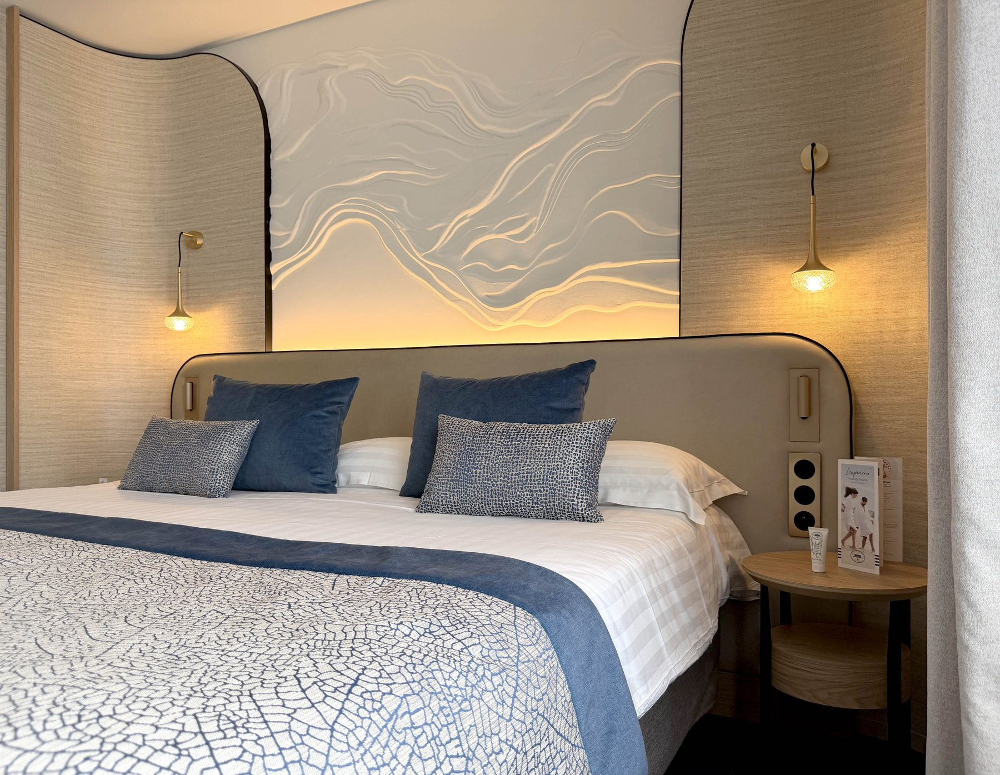
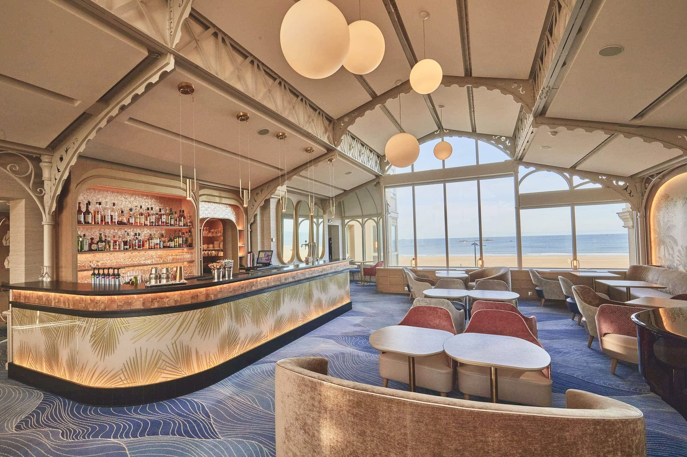
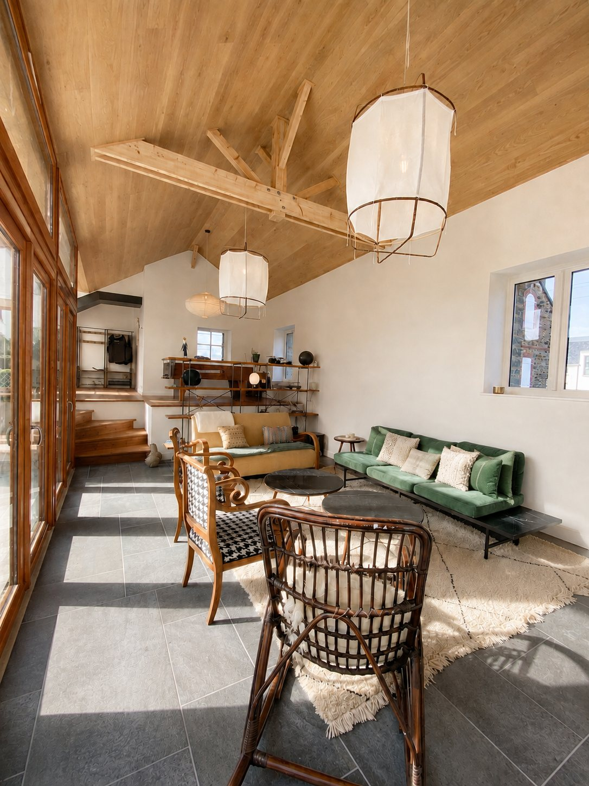

Positionnement
La haute
couture des lieux
YANA K. transforme des lieux de caractère en espaces justes, durables et maîtrisés, de la conception à la livraison.
Chaque projet naît d'une lecture attentive du lieu, de ses usages et de son identité. Le regard, la matière et la proportion guident une transformation incarnée.



